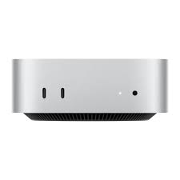

Серия Mac Mini
История
Mac Mini — Компактная мощность
Анонсы и даты выхода
- Первый Mac Mini: 11 января 2005 года
- Mac Mini (Intel): 1 марта 2006 года
- Mac Mini (M1): 10 ноября 2020 года
- Mac Mini (M2): 17 января 2023 года
Ключевые особенности
- Чипы Apple M1 и M2 (для моделей 2020 и 2023 года)
- Компактный дизайн (7.7 дюймов в ширину и 1.4 дюйма в высоту)
- До 64 ГБ ОЗУ и до 2 ТБ SSD памяти
- Порты Thunderbolt / USB 4, HDMI 2.0, Gigabit Ethernet
- Поддержка до трех дисплеев (для модели с чипом M1)
Производительность и области применения
Mac Mini — это небольшая, но мощная машина, подходящая для домашних пользователей, профессионалов и разработчиков, которым нужна высокая производительность в компактном корпусе.
Отзывы и популярность
Известен своей впечатляющей производительностью в таком компактном корпусе, Mac Mini является любимцем пользователей, которые хотят мощный настольный компьютер без лишнего места.
Комплектация и аксессуары
- В комплекте: Mac Mini, силовой кабель
- Дополнительно: клавиатура, мышь, внешние накопители, мониторы